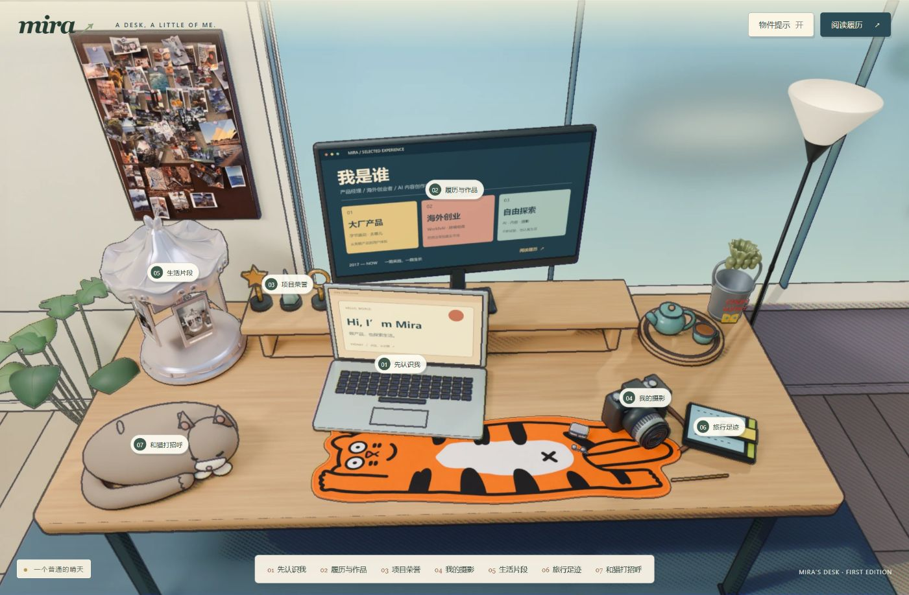
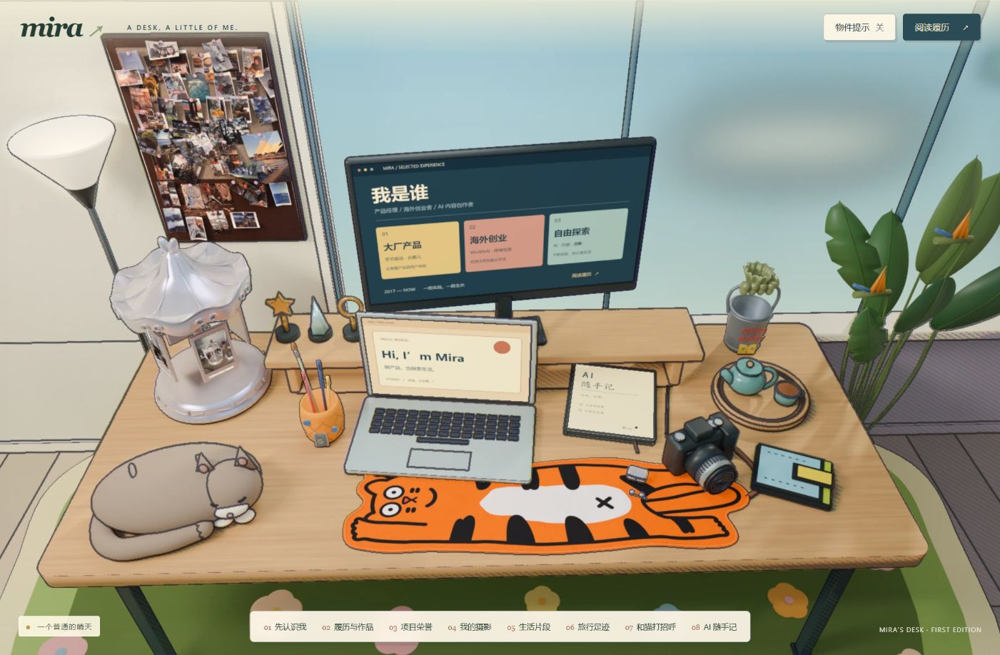
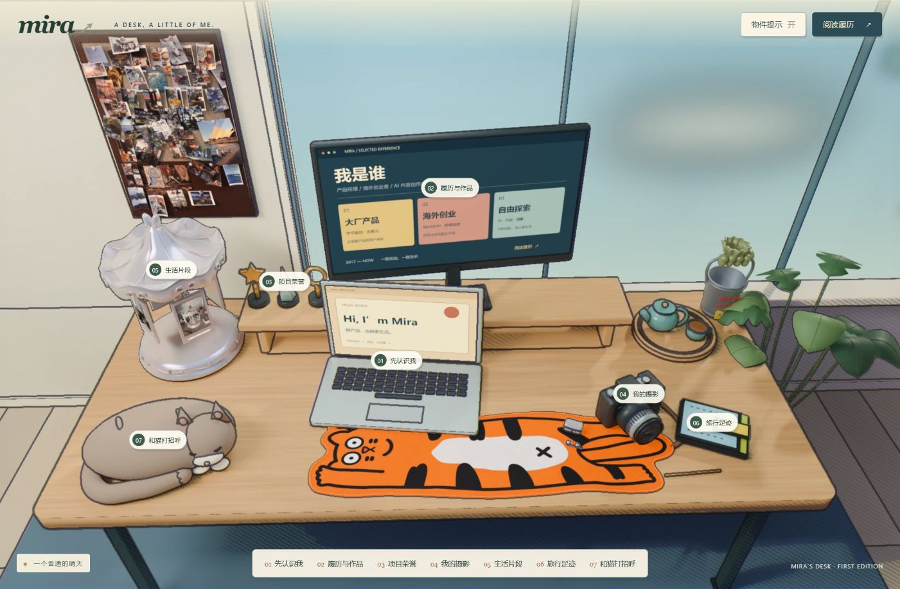

A早期方案

右灯 · 左绿植
照片与绿植呼应左侧的生活物件，落地灯平衡右侧留白。
打开 A 版↗B 版是当前工位，加入了手写笔记本、天堂鸟与真实生活物件。
A、C 保留为之前的布局参考，点击画面可进入对应版本。

照片与绿植呼应左侧的生活物件，落地灯平衡右侧留白。
打开 A 版↗
落地灯靠近照片板，左侧更集中；右侧保留窗边的绿意。
打开 B 版↗
不放落地灯，让窗景更完整；保留照片和绿植带来的生活感。
打开 C 版↗